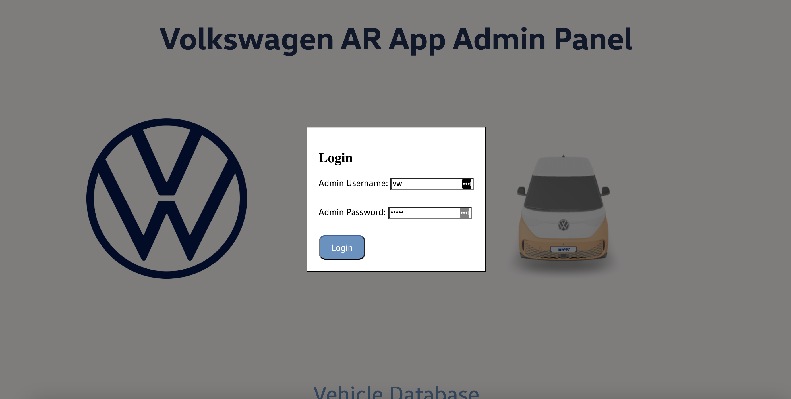
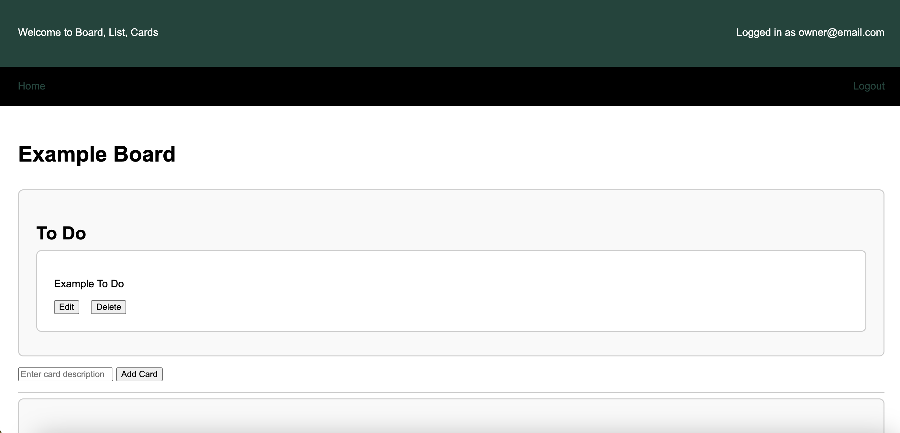
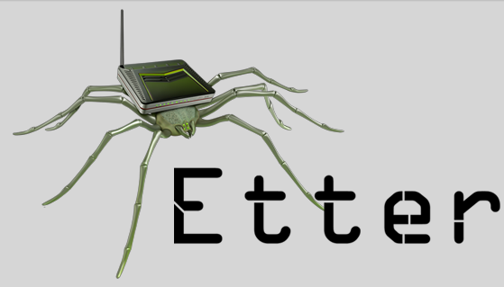

.png)
As part of the MSU Computer Science Capstone Course, our team developed an application for Volkswagen that enables users to customize their vehicles with various colors and accessories. Users can then view their customized vehicles in full size. The application's backend efficiently manages user information and model files. Additionally, an Admin Panel simplifies the process of adding, editing, or deleting model files without direct database access. This project highlights our proficiency in both frontend user experience design and backend data management, contributing to a seamless and engaging user experience.

I created an admin panel web application for my Capstone project with Volkswagen. While the original servers supporting it are no longer available, the admin login functionality remains operational. To access the panel, please use the following credentials: username: vw, password: admin.

This "Trello" based website, developed as the final project for my web application development course, represents the culmination of my learning journey throughout the course. It incorporates a reactive front-end and utilizes a relational MySQL database. Notably, the website features user authentication and employs asynchronous communication via socket.io to dynamically update pages, enhancing the user experience. I utilized HTML, CSS, JavaScript, and Jinja to construct the application, showcasing my proficiency in web development technologies and techniques. To use an example account, please use the following credentials: username: owner@email.com, password: password.

I collaborated on the development of a Michigan State-themed side-scroller game reminiscent of classic Mario games. Players aim to collect as much money as possible while dodging enemy gnomes. This project provided hands-on experience in a group setting, introducing me to an example development process and teamwork dynamics. Utilizing C++, we designed the game using UML principles for structured planning and employed XML for level loading, enhancing the game's flexibility and scalability.

Our team developed a traffic jam assist software system as a part of CSE 435 Software Engineering. Designed to function within automotive vehicles, this system enables drivers to set a specific distance for their vehicle to maintain, facilitating smooth operation during traffic congestion. The Software Requirements Specification (SRS) document comprehensively outlines the system's requirements, including diagrams, constraints, and models, providing all necessary information about its functionalities and operation.

This project leveraged keyframes and tweening techniques, empowering users to manipulate and rotate figures. This functionality enables users to craft basic animations synchronized with the timeline. Throughout this endeavor, I explored various animation styles, expanding my repertoire. Additionally, I deepened my understanding of utilizing WxFormBuilder to construct and enhance Graphical User Interfaces (GUIs), enriching my skill set in GUI development.

I developed an interactive aquarium application where users can populate their virtual tanks with various types of fish, each exhibiting unique behaviors. Users have the ability to save and load the states of their aquariums using XML. This project marked one of my first experiences using WxFormBuilder to construct Graphical User Interfaces (GUIs). Additionally, I integrated simple animations into the application, incorporating time-dependent factors to enhance the user experience.

I created a short video showcasing a project I completed for my computer security course. In the project, I utilized Ettercap on a private network to discover a "victim's" IP address. After identifying the IP, I employed DNS spoofing and ARP poisoning to redirect the victim's HTTP requests to the adversary device.

My resume and transcript. Covers my education, experiences, jobs, and skills.